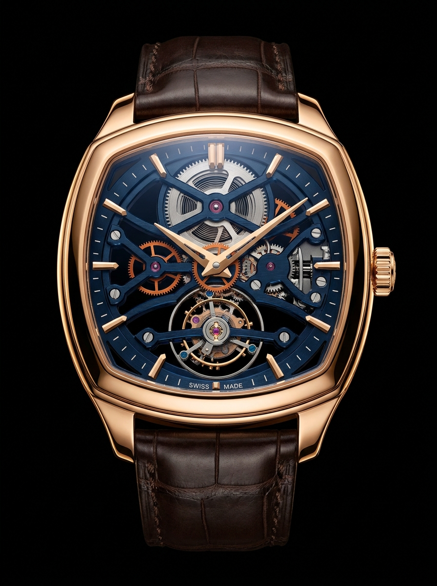
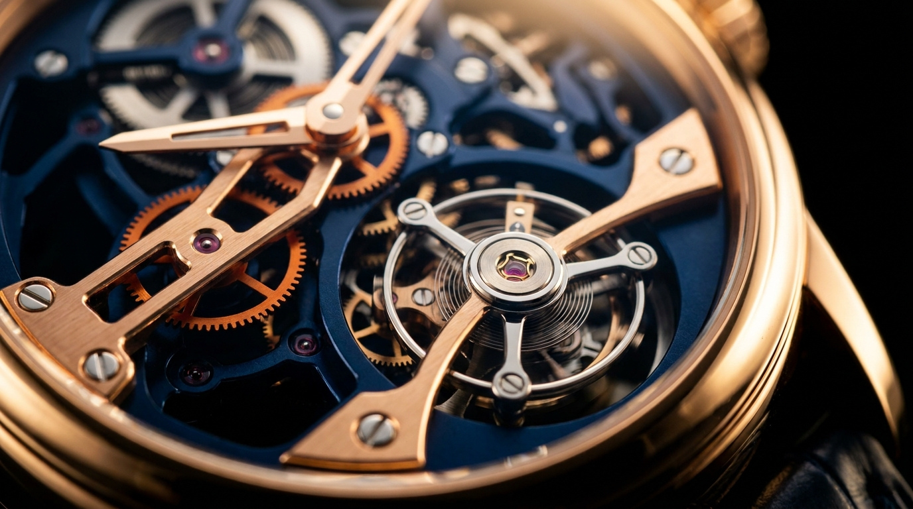
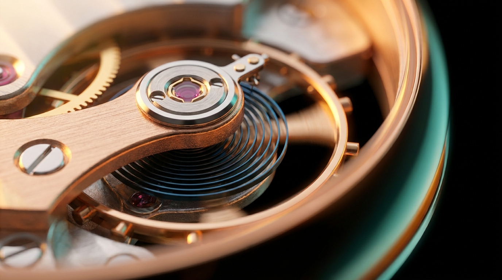

CHRONOS // TYPE-O
SWISS METALLIC BALANCE
SPECIFICATIONS // 4HZ MOVEMENT
4HZ
28,800 vibrations per hour. The high-frequency oscillator at the heart of the TYPE-O caliber.
SPECIFICATIONS // 02. ROTATION
PERPETUAL
PERPETUAL
MOTION
The flying tourbillon turns once every sixty seconds, suspended on a single bridge — averaging out the pull of gravity.
03. CALIBER BALANCE
METALLIC
METALLIC
BALANCE
A free-sprung balance, tuned by hand. The hairspring breathes in perfect concentric arcs — accurate to – 1 / + 2 sec a day.
SCROLL TO DISASSEMBLE
CHRONOS // TYPE-O01 — CASE